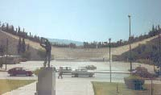

|

De første moderne lekene fant sted i Athen i 1896, på den gamle olympiastadion, som ligger relativt
nær Akropolis, og som hadde blitt nyrestaurert for anledningen. Banen var 333 meter lang, og avstanden mellom langsidene
var bare 18 meter. Ikke nok med at svingene var krappe, løpsretningen var den motsatte av
hva vi er vant med i våre dager.
Med en tilskuerkapasitet på 70000 var det plass til over halvparten av alle
som bodde i Athen den gangen, og lekene ble en fantastisk publikumssuksess. (Det var jo 1503 år siden
forrige gang!) 14 land deltok, Norge var ikke blant disse, og det ble konkurrert om 44 OL-titler i friidrett, turn, bryting, fekting,
skyting, svømming, sykling, tennis og vektløfting. Vinnerne fikk sølvmedalje, toerne bronse,
mens resten drog tomhendt hjem! Historiens første olympiske mester i moderne tid ble den amerikanske
tresteghopperen James Connolly, som hoppet 13.71. For grekerne var selvfølgelig maraton den store øvelsen,
og hjemmefavoritten Spiridon Louis vant på 2.58.50 i den høyst klassiske traséen med start på slettene ved
Maraton. Dansken Viggo Jensen ble Nordens første OL-mester, i vektløfting med to hender. Dessuten ble han nummer
to i énhåndsløft og pistolskyting og nummer tre i geværskyting! Hellas ble selvfølgelig beste nasjon foran USA og Tyskland.
En fransk baron, Pierre
de Coubertin, hadde tatt initiativet til å gjenopplive de olympiske
lekene. Som franskmann hadde han opplevd det forsmedelige krigsnederlaget
mot tyskerne i 1870-71, og som adelsmann følte han aristokratiets posisjon
som truet av den voksende arbeiderklassen og middelklassen. Han fant mye
av svaret på utfordringene i den engelske
sporten. Dannelsesidealene her ville han smelte sammen med den
klassiske greske kulturen, som gjennom utgravinger hadde blitt viet
stor oppmerksomhet på 1800-tallet. Via kontakter med innflytelsesrike
menn i innflytelsesrike europeiske land fikk han til slutt dannet Den
internasjonale olympiske komité i Paris i 1894, og der ble det fattet
vedtak om å avholde de første lekene i Athen i 1896 og i Paris i 1900.
De 2. olympiske lekene i Paris ble i motsetning til lekene i Athen en nærmest pinlig affære. Lekene ble overskygget av verdensutstillingen, som ble
arrangert samtidig, noe som ikke var uvanlig den føste tida. Kuriøse øvelser som dragkamp stod på programmet og
ble vunnet av tre dansker og tre svensker. En svensk maratonløper ledet med over 10 minutter da han, ifølge han
selv, tøyset bort 40 minutter i en dårlig merket løype og ble nummer tre! Konkurranser for kvinner kom med på
det olympiske programmet, og Norge var med for første gang, men noen av utøverne drog hjem uten å vite at de hadde vært
med i et OL! Hva som er enda verre, er det faktum at jubileumsberetningen for Oslo-skytterne fra 1933 forteller at
noen hadde vært med i et internasjonelt stevne i Paris!
|
|